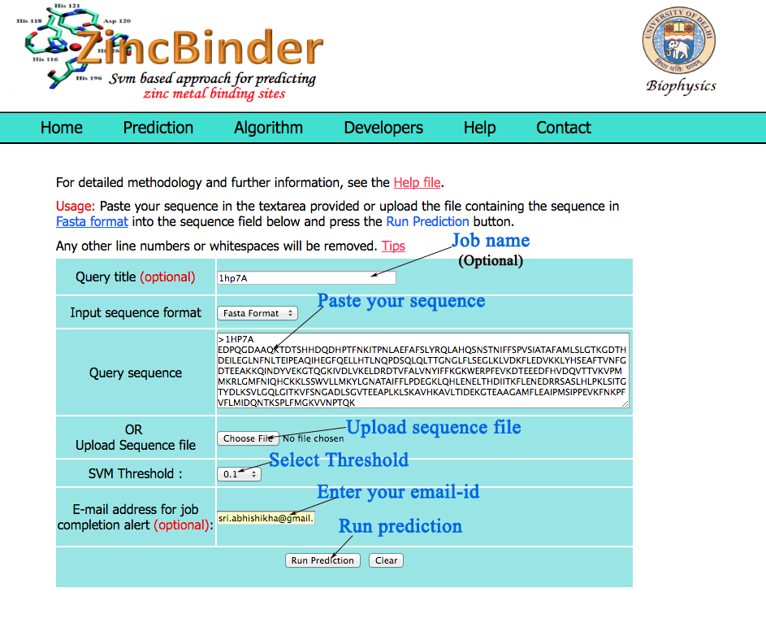
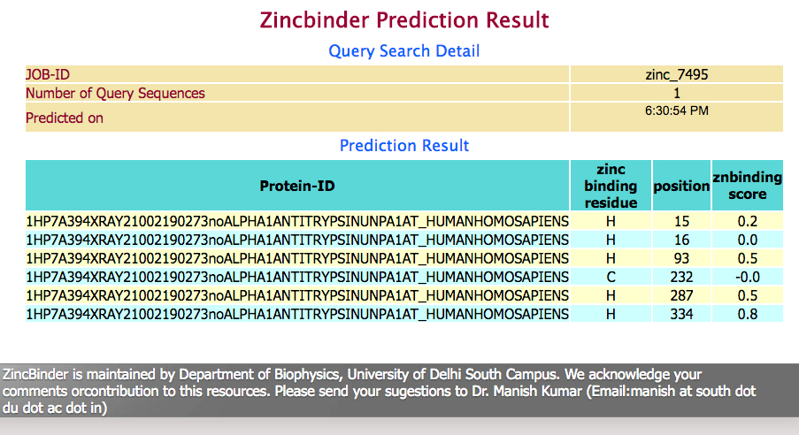

General information: |
| Zincbinder is a simple and accurate support vector machine based prediction system, which takes a protein sequence as an input and predicts zinc metal ion binding sites. User can perform the predictions of their choice and receive the results of the prediction via e-mail or the web. |
Users can follow the following steps while using the ZincBinder:- |
Sequence Name: |
| In this area,the user can submit the name of the query sequence. This is optional and will not affect the prediction |
E-mail Address: |
| Depending upon the option which will be opted for prediction or number of queries in que, time required to serve the query will vary from 10 seconds to more than 5 minutes. Instead of waiting till the prediction is complete, this option provide oppurtunity to put the email-id of user to the server. As the prediction is complete, user will receive an email to intimate the same. Only alphabets or numerics or '_' should be there in email-id. |
Input Sequence : |
The user can paste query sequence in fasta format in the provided inbox.The server also has the facility for uploading the local sequence files or by browsing the disk . Amino acid sequences must be entered in the one-letter code.All the non standard characters will be ignored from the sequence.A sample of submission form with lebeled fields is shown below. |
|  |
SVM Threshold : |
| The method is based on Support Vector Machine (SVM). Depending upon the threshold value which user choses, SVM will classify the ziinc binding sites and non zinc binding sites in protein sequences. The default threshold is 0. If user want less sensitivity but more specificity, then higher threshold value should be specified, but if opposite is anticipated then lower threshold value should be choosen. So, the expected outcome will depends on the trade-off between sensitivity and specificity. |
Prediction Result: |
| After analysis the prediction results are shown in user-friendly format.The results provides information about summary of submitted sequence and final prediction results.Prediction results provides information in four tabulated column showing query sequence, zinc binding residue and their sequence position and corresponding zinc binding score.A sample of prediction output is shown below. |
|  |
Standalone: |
| A standalone version of ZincBinder prediction software be downloaded here . The software has been only tested on Linux. Please note that you should read the license terms given in the README file if you wish to incorporate ZincBinder in another program . |
Dataset |
| The complete list of the data sets used for ZincBinder evaluation can be downloaded here . |
ZincBinder is maintained by Department of Biophysics, University of Delhi South Campus. We acknowledge your comments or contribution to this resources. Please send your sugestions to Dr. Manish Kumar (Email:manish at south dot du dot ac dot in)